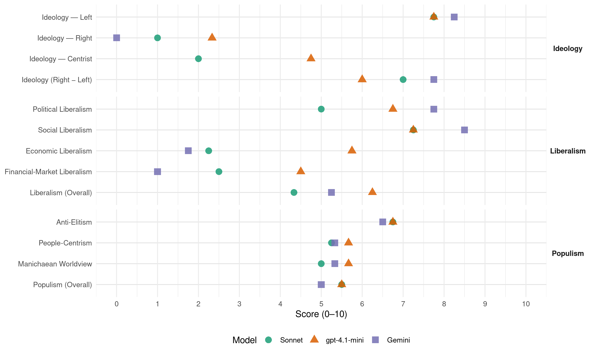

BE (Portugal, 2005)
manifesto_id 35211_200502
Get full text: This site shows derived annotations and short verbatim quotes only. The full manifesto text is © Manifesto Project / WZB — obtain it via manifesto-project.wzb.eu using the manifesto_id above.
Headline scores
| Dimension | Sonnet | gpt-4.1-mini | Gemini |
|---|---|---|---|
| Populism (Overall) | 5.5 | 5.5 | 5.0 |
| Anti-Elitism | 6.8 | 6.8 | 6.5 |
| People-Centrism | 5.2 | 5.7 | 5.3 |
| Manichaean Worldview | 5.0 | 5.7 | 5.3 |
| Ideology (Right − Left) | 7.0 | 6.0 | 7.8 |
| Liberalism (Overall) | 4.3 | 6.2 | 5.2 |
| Political Liberalism | 5.0 | 6.8 | 7.8 |
| Social Liberalism | 7.2 | 7.2 | 8.5 |
| Economic Liberalism | 2.2 | 5.8 | 1.8 |
| Financial-Market Liberalism | 2.5 | 4.5 | 1.0 |
Evidence per dimension
Economic Liberalism
Gemini · score 2.0 · verified · chunk 1
“nacionalização do sector da energia”
O Bloco compromete-se com uma política que avance na nacionalização do sector da energia, para impedir esta desregulação
Gemini · score 1.0 · verified · chunk 2
“rejeita vigorosamente a ideia liberalizadora e privatista”
por tudo isto, o Bloco de Esquerda rejeita vigorosamente a ideia liberalizadora e privatista que norteia as políticas de saúde dos últimos governos.
Gemini · score 2.0 · verified · chunk 3
“combater a concentração privada dos meios de comunicação”
ASSIM, PARA COMBATER A CONCENTRAÇÃO PRIVADA DOS MEIOS DE COMUNICAÇÃO SOCIAL, O BLOCO PROPÕE
Gemini · score 2.0 · verified · chunk 4
“recusa da privatização dos serviços públicos”
Recusa da Directiva sobre mercado único de serviços e, em particular, recusa da privatização dos serviços públicos;
gpt-4.1-mini · score 7.0 · verified · chunk 1
“O Bloco defende uma reforma fiscal profunda simplificando o sistema dos impostos e criando uma unidade especializada no combate à fraude”
…Uma reforma fiscal radicalmente justa é um dos instrumentos mais importantes para começar a corrigir os abusos de poder e as desigualdades na sociedade portuguesa. O Bloco defende uma reforma fiscal profunda simplificando o sistema dos impostos e criando uma unidade especializada no combate à fraude…
gpt-4.1-mini · score 6.0 · verified · chunk 2
“a defesa da Escola Pública, de qualidade e sem concessões é o essencial da nossa política”
As tendências neo-liberais que procuram resolver a crise pela privatização, que marcaram os governos do PSD/PP e encontram eco em alguns sectores do PS, são uma preocupação a que a esquerda não pode senão dar combate político. A defesa da Escola Pública, de qualidade e sem concessões é o essencial da nossa política.
gpt-4.1-mini · score 7.0 · verified · chunk 3
“O BLOCO DEFENDE UM MODELO DE DESCENTRALIZAÇÃO QUE: Rejeita a manipulação geográfica produzida pelos governos PSD-PP, que impuseram entidades territoriais sem coerência nem estratégia”
NESSE SENTIDO, O BLOCO DEFENDE UM MODELO DE DESCENTRALIZAÇÃO QUE: Rejeita a manipulação geográfica produzida pelos governos PSD-PP, que impuseram entidades territoriais sem coerência nem estratégia; Promove comunidades territoriais com competências supramunicipais, meios adequados e órgãos com legitimidade própria para o seu pleno exercício, validada pelo voto directo dos eleitores da respectiva região.
gpt-4.1-mini · score 3.0 · verified · chunk 4
“privatizações e liberalizações de mercado”
E, contudo, a alternativa existe – o Bloco, junto com sectores importantes da esquerda europeia, defende: … O único domínio onde tal estratégia tem sido aplicada sem demoras é no capítulo das privatizações e liberalizações de mercado, com as consequências que se conhecem em matéria de desemprego, desregulação do trabalho e diminuição da qualidade na prestação de múltiplos serviços.
Sonnet · score 2.0 · verified · chunk 1
“modelo de desenvolvimento liberal tornou-se um pântano”
O resultado foi uma catástrofe social e o afundamento da economia, mergulhada na mais grave recessão dos últimos 20 anos… O modelo de desenvolvimento liberal tornou-se um pântano.
Sonnet · score 2.0 · verified · chunk 2
“regras absolutistas de mercado é prejudicial”
Mas a submissão da política de energia às regras absolutistas de mercado é prejudicial; nesse sentido, o MIBEL merece a oposição do Bloco
Sonnet · score 3.0 · verified · chunk 3
“serviços públicos cedem lugar aos agora chamados «serviços de interesse geral»”
uma Europa de mercados liberalizados, onde os serviços públicos cedem lugar aos agora chamados «serviços de interesse geral» e onde os Estados só devem intervir subsidiariamente da iniciativa privada
Sonnet · score 2.0 · verified · chunk 4
“recusa da privatização dos serviços públicos”
Recusa da Directiva sobre mercado único de serviços e, em particular, recusa da privatização dos serviços públicos;
Financial-Market Liberalism
Gemini · score 1.0 · verified · chunk 1
“Levantamento do segredo bancário”
5ª MEDIDA LEVANTAMENTO DO SEGREDO BANCÁRIO Levantamento do segredo bancário, para efeito de confirmação das declarações de IRS
Gemini · score 1.0 · verified · chunk 4
“Redução da taxa de juro do BCE”
Redução da taxa de juro do BCE para 1,5%, para promover o investimento e a criação de emprego;
gpt-4.1-mini · score 7.0 · verified · chunk 1
“O levantamento do segredo bancário para efeitos de verificação das declarações dos contribuintes e do combate à evasão fiscal”
…O Bloco defende o levantamento do segredo bancário para efeitos de verificação das declarações dos contribuintes e do combate à evasão fiscal, criando-se uma unidade fiscal de elite para tratar a informação e actuar em conformidade…
gpt-4.1-mini · score 2.0 · verified · chunk 4
“proibir explicitamente o endividamento público europeu”
Ao dar estatuto constitucional às políticas monetárias que têm sido seguidas e ao proibir explicitamente o endividamento público europeu, limitando os recursos da União às contribuições dos Estados e a alguns impostos, o que o Tratado impede são escolhas económicas que tenham como prioridade a criação de emprego e não o controlo dos preços.
Sonnet · score 3.0 · verified · chunk 1
“imposto sobre as operações cambiais (Taxa Tobin)”
Controlo dos movimentos de capitais, obrigando a registo das operações transfronteiriças, e aplicando um imposto sobre as operações cambiais (Taxa Tobin).
Sonnet · score 2.0 · verified · chunk 2
“pagamento de dividendos aos accionistas é priorizado”
o pagamento de dividendos aos accionistas é priorizado em vez da qualidade da água ou da garantia de funcionamento a longo prazo das canalizações
Sonnet · score 3.0 · verified · chunk 3
“a submissão à ortodoxia financeira condicionam e limitam esses objectivos”
a estratégia a que esta obedece e a sua submissão à ortodoxia financeira condicionam e limitam esses objectivos. Dito de outro modo: os fundos comunitários permitiram a Portugal uma modernização de superfície
Sonnet · score 2.0 · verified · chunk 4
“Redução da taxa de juro do BCE para 1,5%”
Redução da taxa de juro do BCE para 1,5%, para promover o investimento e a criação de emprego;
Political Liberalism
Gemini · score 8.0 · verified · chunk 1
“projecto de modernidade e democracia social”
Não existe uma direcção para o país, quando era necessário um projecto de modernidade e democracia social, de desenvolvimento e justiça.
Gemini · score 7.0 · verified · chunk 2
“concentração põe em causa o pluralismo, a liberdade de imprensa e a própria democracia”
caso do sector da informação a concentração põe em causa o pluralismo, a liberdade de imprensa e a própria democracia. Afirma o nº 4 do artigo
Gemini · score 8.0 · verified · chunk 3
“pluralismo, a liberdade de imprensa e a própria democracia”
a concentração põe em causa o pluralismo, a liberdade de imprensa e a própria democracia. Afirma o nº 4
Gemini · score 8.0 · verified · chunk 4
“fonte de legitimidade seja a democracia”
Portugal tem interesse em opor uma Europa onde a fonte de legitimidade seja a democracia. Uma Europa desgovernamentalizada, assente em duas câmaras com poder de iniciativa legislativa
gpt-4.1-mini · score 8.0 · verified · chunk 1
“O Bloco defende uma alternativa de esquerda, tendo-se oposto ao programa do último governo Guterres e tendo-o desafiado com uma moção de censura”
…Durante a legislatura que corresponde ao segundo governo Guterres, os deputados do Bloco apresentaram na Assembleia da República um grande número de propostas fundamentais, muitas das quais foram aprovadas. O Bloco defende uma alternativa de esquerda, tendo-se oposto ao programa do último governo Guterres e tendo-o desafiado com uma moção de censura quando o esgotamento das suas políticas e a sua aliança com a direita se tornou evidente…
gpt-4.1-mini · score 7.0 · verified · chunk 2
“A Constituição da República Portuguesa define, na alínea a do número 2 do seu artigo 67”
A Constituição da República Portuguesa define, na alínea a do número 2 do seu artigo 67, a obrigação constitucional de regulamentação da procriação medicamente assistida, “em termos que salvaguardem a dignidade da pessoa humana”. Essa regulamentação tem sido objecto de debate nacional, mas não foi até hoje definido um regime jurídico que permita dar conteúdo à exigência constitucional.
gpt-4.1-mini · score 8.0 · verified · chunk 3
“Afirma o nº 4 do artigo 38º da Constituição da República Portuguesa que «O Estado assegura a liberdade e a independência dos órgãos de comunicação social perante o poder político e o poder económico”
A concentração põe em causa o pluralismo, a liberdade de imprensa e a própria democracia. Afirma o nº 4 do artigo 38º da Constituição da República Portuguesa que «O Estado assegura a liberdade e a independência dos órgãos de comunicação social perante o poder político e o poder económico, impondo o princípio da especialidade das empresas titulares de órgãos de informação geral, tratando-as e apoiando-as de forma não discriminatória e impedindo a sua concentração, designadamente através de participações múltiplas ou cruzadas.»
gpt-4.1-mini · score 4.0 · verified · chunk 4
“não dar poder de iniciativa legislativa ao Parlamento”
No plano do poder político, reforça o peso do Conselho Europeu, enfraquece a Comissão e continua a não dar poder de iniciativa legislativa ao Parlamento. Fica claramente abaixo dos mínimos exigíveis em matéria de democracia neste começo do século XXI.
Sonnet · score 4.0 · verified · chunk 1
“défice democrático”
II. O BLOCO DE ESQUERDA, OPOSIÇÃO À DIREITA E ALTERNATIVA PARA O PAÍS — B) RESOLVER A DÍVIDA INTERNA E O DÉFICE DEMOCRÁTICO — the manifesto calls for resolving the democratic deficit and improving democratic governance.
Sonnet · score 4.0 · verified · chunk 2
“pluralismo, a liberdade de imprensa e a própria democracia”
no caso do sector da informação a concentração põe em causa o pluralismo, a liberdade de imprensa e a própria democracia
Sonnet · score 7.0 · verified · chunk 3
“a concentração põe em causa o pluralismo, a liberdade de imprensa e a própria democracia”
no caso do sector da informação a concentração põe em causa o pluralismo, a liberdade de imprensa e a própria democracia.
Sonnet · score 5.0 · mixed · chunk 4
“refundação democrática e social da União”
Do que se trata é de Portugal deixar de ser um ‘consumidor de Europa’, para passar a ser actor de uma refundação democrática e social da União.
Liberalism (Overall)
Gemini · score 5.0 · verified · chunk 1
“projecto de modernidade e democracia social”
Não existe uma direcção para o país, quando era necessário um projecto de modernidade e democracia social, de desenvolvimento e justiça.
Gemini · score 5.0 · verified · chunk 2
“rejeita vigorosamente a ideia liberalizadora e privatista”
por tudo isto, o Bloco de Esquerda rejeita vigorosamente a ideia liberalizadora e privatista que norteia as políticas de saúde dos últimos governos.
Gemini · score 6.0 · verified · chunk 3
“pluralismo, a liberdade de imprensa e a própria democracia”
a concentração põe em causa o pluralismo, a liberdade de imprensa e a própria democracia. Afirma o nº 4
Gemini · score 5.0 · verified · chunk 4
“fonte de legitimidade seja a democracia”
Portugal tem interesse em opor uma Europa onde a fonte de legitimidade seja a democracia. Uma Europa desgovernamentalizada, assente em duas câmaras com poder de iniciativa legislativa
gpt-4.1-mini · score 8.0 · verified · chunk 1
“O Bloco defende uma reforma fiscal profunda simplificando o sistema dos impostos e criando uma unidade especializada no combate à fraude”
…Uma reforma fiscal radicalmente justa é um dos instrumentos mais importantes para começar a corrigir os abusos de poder e as desigualdades na sociedade portuguesa. O Bloco defende uma reforma fiscal profunda simplificando o sistema dos impostos e criando uma unidade especializada no combate à fraude…
gpt-4.1-mini · score 7.0 · verified · chunk 2
“A Constituição da República Portuguesa define, na alínea a do número 2 do seu artigo 67”
A Constituição da República Portuguesa define, na alínea a do número 2 do seu artigo 67, a obrigação constitucional de regulamentação da procriação medicamente assistida, “em termos que salvaguardem a dignidade da pessoa humana”. Essa regulamentação tem sido objecto de debate nacional, mas não foi até hoje definido um regime jurídico que permita dar conteúdo à exigência constitucional.
gpt-4.1-mini · score 7.0 · verified · chunk 3
“Afirma o nº 4 do artigo 38º da Constituição da República Portuguesa que «O Estado assegura a liberdade e a independência dos órgãos de comunicação social perante o poder político e o poder económico”
A concentração põe em causa o pluralismo, a liberdade de imprensa e a própria democracia. Afirma o nº 4 do artigo 38º da Constituição da República Portuguesa que «O Estado assegura a liberdade e a independência dos órgãos de comunicação social perante o poder político e o poder económico, impondo o princípio da especialidade das empresas titulares de órgãos de informação geral, tratando-as e apoiando-as de forma não discriminatória e impedindo a sua concentração, designadamente através de participações múltiplas ou cruzadas.»
gpt-4.1-mini · score 3.0 · verified · chunk 4
“privatizações e liberalizações de mercado”
E, contudo, a alternativa existe – o Bloco, junto com sectores importantes da esquerda europeia, defende: … O único domínio onde tal estratégia tem sido aplicada sem demoras é no capítulo das privatizações e liberalizações de mercado, com as consequências que se conhecem em matéria de desemprego, desregulação do trabalho e diminuição da qualidade na prestação de múltiplos serviços.
Sonnet · score 4.0 · verified · chunk 1
“reforma fiscal radicalmente justa”
Uma reforma fiscal radicalmente justa é um dos instrumentos mais importantes para começar a corrigir os abusos de poder e as desigualdades na sociedade portuguesa.
Sonnet · score 4.0 · verified · chunk 2
“rejeita vigorosamente a ideia liberalizadora e privatista”
o Bloco de Esquerda rejeita vigorosamente a ideia liberalizadora e privatista que norteia as políticas de saúde dos últimos governos
Sonnet · score 5.0 · verified · chunk 3
“a concentração põe em causa o pluralismo, a liberdade de imprensa e a própria democracia”
no caso do sector da informação a concentração põe em causa o pluralismo, a liberdade de imprensa e a própria democracia.
Sonnet · score 4.0 · mixed · chunk 4
“Europa social, dotada de serviços públicos europeus”
Portugal tem interesse em opor uma Europa social, dotada de serviços públicos europeus e com políticas europeias fortes de criação de emprego
Anti-Elitism
Gemini · score 8.0 · verified · chunk 1
“As elites políticas dominantes em Portugal são frágeis”
Estes responsáveis políticos candidatam-se mas, uma vez eleitos, desaparecem com as derrotas. As elites políticas dominantes em Portugal são frágeis e os sectores sociais dominantes, que viveram meio
Gemini · score 6.0 · verified · chunk 2
“promiscuidade entre os negócios dos grandes grupos, as relações destes com o poder político”
últimos quatro meses, tornaram evidente a promiscuidade entre os negócios dos grandes grupos, as relações destes com o poder político e as opções editoriais.
Gemini · score 6.0 · verified · chunk 3
“promiscuidade entre os negócios dos grandes grupos”
tornaram evidente a promiscuidade entre os negócios dos grandes grupos, as relações destes com o poder político
Gemini · score 6.0 · verified · chunk 4
“desculpa para as elites dominantes adiarem”
foram, assim, uma almofada - sem eles, a crise de emprego teria sido ainda muito mais brutal - e uma desculpa para as elites dominantes adiarem o inadiável – uma nova estratégia nacional de desenvolvimento.
gpt-4.1-mini · score 8.0 · verified · chunk 1
“As elites políticas dominantes em Portugal são frágeis”
…com as derrotas. As elites políticas dominantes em Portugal são frágeis e os sectores sociais dominantes, que viveram meio século sob protecção de uma ditadura, não foram capazes de gerar um projecto de desenvolvimento com futuro. A sua política limita-se à dependência e à instrumentalização das benesses do Estado…
gpt-4.1-mini · score 5.0 · verified · chunk 2
“o lobby petrolífero, que domina através da economia, dos governos, da guerra”
O que falta são políticas decididas e corajosas, que vençam o lobby petrolífero, que domina através da economia, dos governos, da guerra; que impeça a tentação de recorrer à energia nuclear e a grandes barragens; que imponha uma “descarbonização” da economia, através da rápida introdução de energias limpas.
gpt-4.1-mini · score 7.0 · verified · chunk 3
“um monopólio da opinião e os interesses que se movem na área das empresas de comunicação social influenciam de forma directa”
Está a ser construído em Portugal, tal como noutros países, um monopólio da opinião e os interesses que se movem na área das empresas de comunicação social influenciam de forma directa e já pouco discreta muitas das decisões do poder político.
gpt-4.1-mini · score 7.0 · verified · chunk 4
“os governos de Portugal têm sido, basicamente, “bons alunos””
Em nome dos fundos, os governos de Portugal têm sido, basicamente, “bons alunos”, comportando-se sempre bem porque procuram estar o mais próximo possível dos que mais decidem. Esta aproximação à dimensão europeia – política mínima em troca de máximos fundos – teve o seu corolário na indicação de Durão Barroso para presidir à Comissão Europeia.
Sonnet · score 8.0 · verified · chunk 1
“As elites políticas dominantes em Portugal são frágeis”
Estes responsáveis políticos candidatam-se mas, uma vez eleitos, desaparecem com as derrotas. As elites políticas dominantes em Portugal são frágeis e os sectores sociais dominantes, que viveram meio século sob protecção de uma ditadura, não foram capazes de gerar um projecto de desenvolvimento com futuro.
Sonnet · score 6.0 · verified · chunk 2
“lobby petrolífero, que domina através da economia, dos governos”
O que falta são políticas decididas e corajosas, que vençam o lobby petrolífero, que domina através da economia, dos governos, da guerra
Sonnet · score 6.0 · verified · chunk 3
“os interesses que se movem na área das empresas de comunicação social influenciam de forma directa e já pouco discreta muitas das decisões do poder político”
Está a ser construído em Portugal, tal como noutros países, um monopólio da opinião e os interesses que se movem na área das empresas de comunicação social influenciam de forma directa e já pouco discreta muitas das decisões do poder político.
Sonnet · score 7.0 · verified · chunk 4
“elites dominantes adiarem o inadiável”
uma almofada - sem eles, a crise de emprego teria sido ainda muito mais brutal - e uma desculpa para as elites dominantes adiarem o inadiável – uma nova estratégia nacional de desenvolvimento.
Ideology — Centrist
gpt-4.1-mini · score 3.0 · verified · chunk 1
“As elites políticas dominantes em Portugal são frágeis e os sectores sociais dominantes…”
…As elites políticas dominantes em Portugal são frágeis e os sectores sociais dominantes, que viveram meio século sob protecção de uma ditadura, não foram capazes de gerar um projecto de desenvolvimento com futuro. A sua política limita-se à dependência e à instrumentalização das benesses do Estado…
gpt-4.1-mini · score 5.0 · verified · chunk 2
“a defesa da Escola Pública, de qualidade e sem concessões é o essencial da nossa política”
As tendências neo-liberais que procuram resolver a crise pela privatização, que marcaram os governos do PSD/PP e encontram eco em alguns sectores do PS, são uma preocupação a que a esquerda não pode senão dar combate político. A defesa da Escola Pública, de qualidade e sem concessões é o essencial da nossa política.
gpt-4.1-mini · score 6.0 · verified · chunk 3
“O BLOCO DE ESQUERDA pretende travar o processo de concentração emergente e impedir a concentração horizontal, vertical e multimédia”
O Bloco de Esquerda pretende travar o processo de concentração emergente e impedir a concentração horizontal, vertical e multimédia. Este objectivo não impede, por si só, a existência de sinergias positivas que permitam a convergência de meios de comunicação e a optimização de meios tecnológicos e tem em conta o reduzido mercado nacional.
gpt-4.1-mini · score 5.0 · verified · chunk 4
“uma esquerda de con.ança para a viragem necessária”
Comprometidos com este programa, as candidatas e candidatos do Bloco de Esquerda continuarão a ser uma esquerda socialista empenhada nas lutas populares, uma esquerda de con.ança para a viragem necessária.
Sonnet · score 2.0 · verified · chunk 1
“esquerda socialista e popular”
O Bloco de Esquerda, a esquerda socialista e popular, apresenta-se nestas eleições como alternativa. Defende políticas claras que são as prioridades para uma governação que responda à urgência social.
Sonnet · score 2.0 · verified · chunk 2
“os partidos do poder trocaram várias vezes de posição”
Nestas lutas, os partidos do poder trocaram várias vezes de posição. O PSD de Cavaco Silva quis avançar com a Central de Resíduos Industriais Perigosos em Estarreja
Sonnet · score 2.0 · verified · chunk 3
“democratização completa do acesso às novas tecnologias”
O Bloco empenha-se por isso na democratização completa do acesso às novas tecnologias de comunicação e de informação
Sonnet · score 2.0 · verified · chunk 4
“participação cidadã”
não pode deixar de estar ligado a mais equidade territorial, melhor ambiente e maior participação cidadã.
Ideology — Left
Gemini · score 9.0 · verified · chunk 1
“O Bloco de Esquerda, a esquerda socialista e popular”
Nesta questão como na da guerra, o que opõe a direita à esquerda é uma questão de civilização e de direitos humanos. O Bloco de Esquerda, a esquerda socialista e popular, apresenta-se nestas eleições como alternativa.
Gemini · score 8.0 · verified · chunk 2
“submissão da política de energia às regras absolutistas de mercado é prejudicial”
públicas e sob orientação de serviço público. Mas a submissão da política de energia às regras absolutistas de mercado é prejudicial; nesse sentido, o MIBEL
Gemini · score 8.0 · verified · chunk 3
“luta pelo fim das desigualdades sociais e económicas”
aliança entre a luta pelo fim das desigualdades sociais e económicas – agravadas pelas políticas neo-liberais
Gemini · score 8.0 · verified · chunk 4
“esquerda socialista empenhada nas lutas populares”
candidatas e candidatos do Bloco de Esquerda continuarão a ser uma esquerda socialista empenhada nas lutas populares, uma esquerda de con.ança para a viragem necessária.
gpt-4.1-mini · score 9.0 · verified · chunk 1
“O Bloco de Esquerda, a esquerda socialista e popular, apresenta-se nestas eleições como alternativa. Defende políticas claras que são as prioridades para uma governação que responda à urgência social.”
…Nesta questão como na da guerra, o que opõe a direita à esquerda é uma questão de civilização e de direitos humanos. O Bloco de Esquerda, a esquerda socialista e popular, apresenta-se nestas eleições como alternativa. Defende políticas claras que são as prioridades para uma governação que responda à urgência social...
gpt-4.1-mini · score 7.0 · verified · chunk 2
“a desigualdade, a pobreza, o desemprego, o abandono e o insucesso escolar”
Existe uma gravíssima dívida interna em Portugal, e a sua resolução deve ser a prioridade das políticas. Essa dívida é a desigualdade, a pobreza, o desemprego, o abandono e o insucesso escolar, a habitação degradada. É a dívida para com as mulheres que recebem menos do que os homens pelo mesmo trabalho, para com os dois milhões de pobres, para com as três milhões de pessoas que vivem em casas sem água ou sem electricidade ou sem uma cozinha ou sem uma casa de banho.
gpt-4.1-mini · score 8.0 · verified · chunk 3
“O BLOCO DEFENDE QUE A GRADUAÇÃO DO 2º CICLO CORRESPONDENTE À ACTUAL LICENCIATURA DEVERÁ CONTINUAR A SER FINANCIADA PELO ESTADO”
POR ISSO, O BLOCO DEFENDE QUE A GRADUAÇÃO DO 2º CICLO CORRESPONDENTE À ACTUAL LICENCIATURA DEVERÁ CONTINUAR A SER FINANCIADA PELO ESTADO. A QUALIFICAÇÃO DO ENSINO SUPERIOR DEPENDE FUNDAMENTALMENTE DA REJEIÇÃO DESTAS REGRAS DE BOLONHA.
gpt-4.1-mini · score 7.0 · verified · chunk 4
“defende: Um programa de investimento público coordenado”
E, contudo, a alternativa existe – o Bloco, junto com sectores importantes da esquerda europeia, defende: Um programa de investimento público coordenado, no valor de 1% do Produto, destinado a criar infra-estruturas com reconversão ambiental, com prioridade para o sector da energia, sendo financiado por títulos da dívida pública europeia a emitir pelo Banco Central Europeu;
Sonnet · score 9.0 · verified · chunk 1
“política de nacionalização da energia”
5. UMA ESTRATÉGIA DE NACIONALIZAÇÃO DA ENERGIA — O Bloco compromete-se com uma política que avance na nacionalização do sector da energia, para impedir esta desregulação e esta ineficiência, garantindo o controlo público sobre as empresas do sector.
Sonnet · score 7.0 · verified · chunk 2
“submissão da política de energia às regras absolutistas de mercado”
Mas a submissão da política de energia às regras absolutistas de mercado é prejudicial; nesse sentido, o MIBEL merece a oposição do Bloco
Sonnet · score 7.0 · verified · chunk 3
“luta pelo fim das desigualdades sociais e económicas – agravadas pelas políticas neo-liberais”
O seu programa resulta da aliança entre a luta pelo fim das desigualdades sociais e económicas – agravadas pelas políticas neo-liberais – e as lutas pelo fim das desigualdades identitárias
Sonnet · score 8.0 · verified · chunk 4
“privatizações e liberalizações de mercado”
o único domínio onde tal estratégia tem sido aplicada sem demoras é no capítulo das privatizações e liberalizações de mercado, com as consequências que se conhecem em matéria de desemprego
Ideology (Right − Left)
Gemini · score 8.0 · verified · chunk 1
“O Bloco de Esquerda, a esquerda socialista e popular”
Nesta questão como na da guerra, o que opõe a direita à esquerda é uma questão de civilização e de direitos humanos. O Bloco de Esquerda, a esquerda socialista e popular, apresenta-se nestas eleições como alternativa.
Gemini · score 8.0 · verified · chunk 2
“submissão da política de energia às regras absolutistas de mercado é prejudicial”
públicas e sob orientação de serviço público. Mas a submissão da política de energia às regras absolutistas de mercado é prejudicial; nesse sentido, o MIBEL
Gemini · score 8.0 · verified · chunk 3
“luta pelo fim das desigualdades sociais e económicas”
aliança entre a luta pelo fim das desigualdades sociais e económicas – agravadas pelas políticas neo-liberais
Gemini · score 7.0 · verified · chunk 4
“esquerda socialista empenhada nas lutas populares”
candidatas e candidatos do Bloco de Esquerda continuarão a ser uma esquerda socialista empenhada nas lutas populares, uma esquerda de con.ança para a viragem necessária.
gpt-4.1-mini · score 7.0 · verified · chunk 1
“O Bloco de Esquerda, a esquerda socialista e popular, apresenta-se nestas eleições como alternativa.”
…Nesta questão como na da guerra, o que opõe a direita à esquerda é uma questão de civilização e de direitos humanos. O Bloco de Esquerda, a esquerda socialista e popular, apresenta-se nestas eleições como alternativa. Defende políticas claras que são as prioridades para uma governação que responda à urgência social…
gpt-4.1-mini · score 5.0 · verified · chunk 2
“a defesa da Escola Pública, de qualidade e sem concessões é o essencial da nossa política”
As tendências neo-liberais que procuram resolver a crise pela privatização, que marcaram os governos do PSD/PP e encontram eco em alguns sectores do PS, são uma preocupação a que a esquerda não pode senão dar combate político. A defesa da Escola Pública, de qualidade e sem concessões é o essencial da nossa política.
gpt-4.1-mini · score 6.0 · verified · chunk 3
“O BLOCO DE ESQUERDA pretende travar o processo de concentração emergente e impedir a concentração horizontal, vertical e multimédia”
O Bloco de Esquerda pretende travar o processo de concentração emergente e impedir a concentração horizontal, vertical e multimédia. Este objectivo não impede, por si só, a existência de sinergias positivas que permitam a convergência de meios de comunicação e a optimização de meios tecnológicos e tem em conta o reduzido mercado nacional.
gpt-4.1-mini · score 6.0 · verified · chunk 4
“defende: Um programa de investimento público coordenado”
E, contudo, a alternativa existe – o Bloco, junto com sectores importantes da esquerda europeia, defende: Um programa de investimento público coordenado, no valor de 1% do Produto, destinado a criar infra-estruturas com reconversão ambiental, com prioridade para o sector da energia, sendo financiado por títulos da dívida pública europeia a emitir pelo Banco Central Europeu;
Sonnet · score 8.0 · verified · chunk 1
“anti-corporativa, redistribuição, justiça social”
Respondendo a esta crise, o Bloco de Esquerda prioriza seis grandes áreas de políticas económicas e sociais: A CRIAÇÃO DE EMPREGO E A REDUÇÃO DA PRECARIEDADE… UMA REFORMA PROFUNDA PARA CRIAR JUSTIÇA FISCAL.
Sonnet · score 7.0 · verified · chunk 2
“rejeita vigorosamente a ideia liberalizadora e privatista”
o Bloco de Esquerda rejeita vigorosamente a ideia liberalizadora e privatista que norteia as políticas de saúde dos últimos governos
Sonnet · score 6.0 · verified · chunk 3
“luta pelo fim das desigualdades sociais e económicas – agravadas pelas políticas neo-liberais”
O seu programa resulta da aliança entre a luta pelo fim das desigualdades sociais e económicas – agravadas pelas políticas neo-liberais – e as lutas pelo fim das desigualdades identitárias
Sonnet · score 7.0 · verified · chunk 4
“esquerda socialista empenhada nas lutas populares”
candidatos do Bloco de Esquerda continuarão a ser uma esquerda socialista empenhada nas lutas populares, uma esquerda de confiança para a viragem necessária.
Ideology — Right
Gemini · score 0.0 · verified · chunk 1
“mecanismo xenófobo de regulação do mercado”
acabam por constituir um mecanismo xenófobo de regulação do mercado de trabalho que desrespeita o princípio da igualdade
Gemini · score 0.0 · verified · chunk 3
“lutas pelo fim das desigualdades identitárias”
económicas – agravadas pelas políticas neo-liberais – e as lutas pelo fim das desigualdades identitárias – agravadas pelo
gpt-4.1-mini · score 2.0 · verified · chunk 1
“O combate à imigração tem sido uma das principais marcas culturais das direitas – mas é profundamente hipócrita”
…O combate à imigração tem sido uma das principais marcas culturais das direitas – mas é profundamente hipócrita porque esta posição deseja e promove a imigração clandestina e em condições subhumanas. O combate da esquerda pelos direitos dos imigrantes é por isso uma questão fundamental de direitos humanos…
gpt-4.1-mini · score 2.0 · verified · chunk 2
“a rejeição da privatização das Águas de Portugal”
O Bloco rejeita terminantemente a privatização das Águas de Portugal: a água é um bem público e portanto não deve ser privatizada, pois tal concederia às empresas concessionárias um desmedido poder de mercado, podendo fixar os preços sem capacidade de influência contrária do consumidor.
gpt-4.1-mini · score 3.0 · verified · chunk 3
“impedir a concentração na mesma empresa da rede fixa de telefone e da distribuição de TV Cabo”
Havendo um quase monopólio de distribuição da TV Cabo e da futura Televisão Digital Terrestre, deve ser impedida a concentração na mesma empresa da rede fixa de telefone e da distribuição de TV Cabo, futuras concorrentes de distribuição.
Sonnet · score 1.0 · verified · chunk 1
“políticas xenófobas que encontraram eco em visões reaccionárias”
Este é um debate que assume especial importância à luz da evolução em muitos países europeus, com a afirmação de políticas xenófobas que encontraram eco em visões reaccionárias e restritivas para os direitos dos imigrantes.
Sonnet · score 1.0 · verified · chunk 2
“população de nacionalidade estrangeira residente em Portugal”
no período inter-censitário (1991 – 2001) a população de nacionalidade estrangeira residente em Portugal mais que duplicou, sem que as novas necessidades geradas por esta transformação tivessem ainda tido reflexos ao nível da oferta educativa
Sonnet · score 1.0 · verified · chunk 3
“Portugal deve, na Europa, bater-se por um projecto de União”
Portugal deve, na Europa, bater-se por um projecto de União capaz de sustentar políticas fortes de coesão social em contexto de alargamento
Sonnet · score 1.0 · verified · chunk 4
“localismos paroquiais”
O debate que merece ser feito sobre os novos desenhos da descentralização não se compagina com localismos paroquiais.
Manichaean Worldview
Gemini · score 7.0 · verified · chunk 1
“se opôs à grande maioria do povo”
A possibilidade de um referendo ou a alteração da lei no Parlamento foram recusadas em nome da estabilidade de uma coligação que assim se opôs à grande maioria do povo.
Gemini · score 5.0 · verified · chunk 2
“vencer o lobby petrolífero, que domina através da economia, dos governos, da guerra”
O que falta são políticas decididas e corajosas, que vençam o lobby petrolífero, que domina através da economia, dos governos, da guerra; que impeça a tentação
Gemini · score 4.0 · verified · chunk 3
“uma disputa de poder de grande importância”
democratização da sociedade de informação é uma disputa de poder de grande importância. O BLOCO DE ESQUERDA
gpt-4.1-mini · score 7.0 · verified · chunk 1
“o que opõe a direita à esquerda é uma questão de civilização e de direitos humanos.”
…o Bloco defendeu desde sempre a necessidade de adopção de uma lei moderna que legalizasse o aborto… Nesta questão como na da guerra, o que opõe a direita à esquerda é uma questão de civilização e de direitos humanos. O Bloco de Esquerda, a esquerda socialista e popular, apresenta-se nestas eleições como alternativa…
gpt-4.1-mini · score 4.0 · verified · chunk 2
“uma fraude contra o ambiente e contra as pessoas”
a comercialização de emissões tornou-se assim uma forma de penalizar os mais atingidos e de evitar a política de redução de poluição, uma fraude contra o ambiente e contra as pessoas. Ora, está disponível a alternativa da energia solar, uma forma de energia limpa que só por si seria capaz de satisfazer as necessidades de conforto e qualidade de vida da humanidade.
gpt-4.1-mini · score 6.0 · verified · chunk 4
“a derrota de uma política europeia de alto perfil”
A vitória de Durão Barroso representa, contudo, a derrota de uma política europeia de alto perfil. Durão Barroso só chega a Bruxelas porque é um presidente fraco, nas mãos de um Conselho Europeu onde a força reside nos governos dos países de maior peso económico e demográfico.
Sonnet · score 7.0 · verified · chunk 1
“o que opõe a direita à esquerda é uma questão de civilização”
Nesta questão como na da guerra, o que opõe a direita à esquerda é uma questão de civilização e de direitos humanos.
Sonnet · score 4.0 · verified · chunk 2
“uma fraude contra o ambiente e contra as pessoas”
a comercialização de emissões tornou-se assim uma forma de penalizar os mais atingidos e de evitar a política de redução de poluição, uma fraude contra o ambiente e contra as pessoas
Sonnet · score 4.0 · verified · chunk 3
“A FRAUDE DO PSD E PP CONTRA OS DIREITOS DOS DEFICIENTES”
A FRAUDE DO PSD E PP CONTRA OS DIREITOS DOS DEFICIENTES Durante a legislatura que agora se concluiu, foram aprovados por unanimidade diversos projectos de Lei de Bases da Deficiência
Sonnet · score 5.0 · verified · chunk 4
“a derrota de uma política europeia”
A vitória de Durão Barroso representa, contudo, a derrota de uma política europeia de alto perfil.
People-Centrism
Gemini · score 6.0 · verified · chunk 1
“melhoria das condições de vida do povo”
combate à precarização da vida e do trabalho, aprovando o prazo máximo de um ano para os contratos a prazo e pela melhoria das condições de vida do povo.
Gemini · score 5.0 · verified · chunk 2
“uma fraude contra o ambiente e contra as pessoas”
penalizar os mais atingidos e de evitar a política de redução de poluição, uma fraude contra o ambiente e contra as pessoas. Ora, está disponível a alternativa
Gemini · score 5.0 · verified · chunk 3
“ampliação dos direitos das grandes maiorias”
intervenção no sentido da ampliação dos direitos das grandes maiorias que são os discriminados ou excluídos
gpt-4.1-mini · score 7.0 · verified · chunk 1
“Portugal europeu do século XXI, país atrasado e injusto, precisa de um novo projecto para um novo ciclo de políticas sociais e este só pode ser criado à esquerda.”
…impasses da governação do país e do regime de alternância em que se baseou a modernização conservadora… Portugal europeu do século XXI, país atrasado e injusto, precisa de um novo projecto para um novo ciclo de políticas sociais e este só pode ser criado à esquerda. Esse é o objectivo e a razão de ser do Bloco de Esquerda…
gpt-4.1-mini · score 4.0 · verified · chunk 2
“os movimentos populares que se manifestaram nos últimos sete anos”
Os movimentos populares que se manifestaram nos últimos sete anos contra a política de resíduos e lixos de governos PS e PSD-PP são expressivos de um problema essencial na política ambiental, pois reuniram gente de todas as idades, do campo e das cidades, cientistas, movimentos sociais, coordenaram-se com outras localidades e regiões, com associações e grupos informais, em manifestações de todo o tipo, desenvolvendo e partilhando informações.
gpt-4.1-mini · score 6.0 · verified · chunk 4
“pessoas, associações, movimentos e forças políticas”
com todas e todos os que querem ter palavra sobre o seu território, pessoas, associações, movimentos e forças políticas. Uma nova relação de poder tem de assumir a descentralização que, para além de agilizar e melhorar a racionalidade da administração, não pode deixar de estar ligado a mais equidade territorial, melhor ambiente e maior participação cidadã.
Sonnet · score 6.0 · verified · chunk 1
“a grande maioria do povo”
A possibilidade de um referendo ou a alteração da lei no Parlamento foram recusadas em nome da estabilidade de uma coligação que assim se opôs à grande maioria do povo.
Sonnet · score 5.0 · verified · chunk 2
“os cidadãos em situação de desemprego, reforma, rendimento mínimo”
de modo a que os cidadãos em situação de desemprego, reforma, rendimento mínimo garantido ou consumos muito baixos tenham direito a tarifários especialmente favoráveis
Sonnet · score 5.0 · verified · chunk 3
“democratização da sociedade de informação é uma disputa de poder de grande importância”
a questão essencial no século da Galáxia Internet é o acesso ao saber, e é por isso que a democratização da sociedade de informação é uma disputa de poder de grande importância.
Sonnet · score 5.0 · verified · chunk 4
“lutas populares, uma esquerda de confiança”
candidatos do Bloco de Esquerda continuarão a ser uma esquerda socialista empenhada nas lutas populares, uma esquerda de confiança para a viragem necessária.
Populism (Overall)
Gemini · score 7.0 · verified · chunk 1
“As elites políticas dominantes em Portugal são frágeis”
Estes responsáveis políticos candidatam-se mas, uma vez eleitos, desaparecem com as derrotas. As elites políticas dominantes em Portugal são frágeis e os sectores sociais dominantes, que viveram meio
Gemini · score 5.0 · verified · chunk 2
“promiscuidade entre os negócios dos grandes grupos, as relações destes com o poder político”
últimos quatro meses, tornaram evidente a promiscuidade entre os negócios dos grandes grupos, as relações destes com o poder político e as opções editoriais.
Gemini · score 5.0 · verified · chunk 3
“promiscuidade entre os negócios dos grandes grupos”
tornaram evidente a promiscuidade entre os negócios dos grandes grupos, as relações destes com o poder político
Gemini · score 3.0 · verified · chunk 4
“desculpa para as elites dominantes adiarem”
foram, assim, uma almofada - sem eles, a crise de emprego teria sido ainda muito mais brutal - e uma desculpa para as elites dominantes adiarem o inadiável – uma nova estratégia nacional de desenvolvimento.
gpt-4.1-mini · score 7.0 · verified · chunk 1
“As elites políticas dominantes em Portugal são frágeis”
…As elites políticas dominantes em Portugal são frágeis e os sectores sociais dominantes, que viveram meio século sob protecção de uma ditadura, não foram capazes de gerar um projecto de desenvolvimento com futuro. A sua política limita-se à dependência e à instrumentalização das benesses do Estado…
gpt-4.1-mini · score 4.0 · verified · chunk 2
“o lobby petrolífero, que domina através da economia, dos governos, da guerra”
O que falta são políticas decididas e corajosas, que vençam o lobby petrolífero, que domina através da economia, dos governos, da guerra; que impeça a tentação de recorrer à energia nuclear e a grandes barragens; que imponha uma “descarbonização” da economia, através da rápida introdução de energias limpas.
gpt-4.1-mini · score 5.0 · verified · chunk 3
“um monopólio da opinião e os interesses que se movem na área das empresas de comunicação social influenciam de forma directa”
Está a ser construído em Portugal, tal como noutros países, um monopólio da opinião e os interesses que se movem na área das empresas de comunicação social influenciam de forma directa e já pouco discreta muitas das decisões do poder político.
gpt-4.1-mini · score 6.0 · verified · chunk 4
“os governos de Portugal têm sido, basicamente, “bons alunos””
Em nome dos fundos, os governos de Portugal têm sido, basicamente, “bons alunos”, comportando-se sempre bem porque procuram estar o mais próximo possível dos que mais decidem. Esta aproximação à dimensão europeia – política mínima em troca de máximos fundos – teve o seu corolário na indicação de Durão Barroso para presidir à Comissão Europeia.
Sonnet · score 7.0 · verified · chunk 1
“fracasso dos três anos das direitas no governo”
I O fracasso dos três anos das direitas no governo — A marca dos dois governos PSD-PP tornou-se assim o facilitismo dos negócios, desde o contrato com o Citigroup para titularizar as dívidas fiscais até às negociações com o fundo Carlyle.
Sonnet · score 5.0 · verified · chunk 2
“lobby petrolífero, que domina através da economia, dos governos”
O que falta são políticas decididas e corajosas, que vençam o lobby petrolífero, que domina através da economia, dos governos, da guerra
Sonnet · score 5.0 · verified · chunk 3
“os interesses que se movem na área das empresas de comunicação social influenciam de forma directa e já pouco discreta muitas das decisões do poder político”
Está a ser construído em Portugal, tal como noutros países, um monopólio da opinião e os interesses que se movem na área das empresas de comunicação social influenciam de forma directa e já pouco discreta muitas das decisões do poder político.
Sonnet · score 5.0 · verified · chunk 4
“elites dominantes adiarem o inadiável”
uma almofada - sem eles, a crise de emprego teria sido ainda muito mais brutal - e uma desculpa para as elites dominantes adiarem o inadiável – uma nova estratégia nacional de desenvolvimento.
Social Liberalism